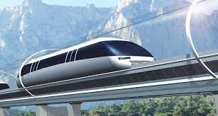

Hyperloop
Hyperloop es un modo de transporte de pasajeros y/o carga propuesto por Tesla y SpaceX, utilizado para describir un diseño de tren en tubos al vacío. A partir del tren al vacío de Robert Goddard, un Hyperloop es un tubo o sistema de tubos sellados, a través de los cuales un objeto puede viajar sin resistencia al aire o a la fricción, transportando personas u objetos a alta velocidad, reduciendo drásticamente los tiempos de viajes en distancias de medio alcance.1 La versión del concepto de Elon Musk, 2 mencionada públicamente por primera vez en 2012, incorpora tubos de presión reducida en los que las cápsulas presurizadas se desplazan sobre cojinetes neumáticos accionados por motores de inducción lineal y compresores axiales. El concepto Alpha de Hyperloop se publicó por primera vez en agosto de 2013, proponiendo y examinando una ruta que va desde la región de Los Ángeles hasta el Área de la Bahía de San Francisco, siguiendo aproximadamente la autopista de la Interestatal 5. El Génesis de Hyperloop se concibió en 57 páginas.3 El sistema Hyperloop propulsaría a los pasajeros a lo largo de la ruta de 560 kilómetros a una velocidad de 1.200 km/h, en 35 minutos, que es considerablemente más rápido que los tiempos actuales de viajes en tren o avión. Las estimaciones preliminares de costes para esta ruta sugerida por Los Ángeles - San Francisco fueron incluidas en el libro blanco: 6.000 millones de dólares para una versión solo para pasajeros y 7.500 millones de dólares para una versión de diámetro algo mayor que transporta pasajeros y vehículos, aunque los analistas de transporte tenían dudas de que el sistema pudiera construirse sobre la base de ese presupuesto; algunos analistas afirmaron que el Hyperloop sería de varios miles de millones de dólares más de lo presupuestado, teniendo en cuenta los costes de construcción, desarrollo y operación.456 La tecnología de Hyperloop ha sido pensada bajo el concepto de hardware libre por Elon Musk y SpaceX, y han animado a otros a poner sus ideas y que el desarrollo sea mayor. Con ese fin, se han creado varias empresas, y docenas de equipos interdisciplinarios llevados a cabo por estudiantes que trabajan para avanzar la tecnología.7 No obstante, algunos expertos son escépticos, diciendo que las propuestas pasan por alto los gastos y los riesgos de desarrollar la tecnología y que la idea es "irrealizable".8 La construcción de un prototipo a escala real, con una vía de 8 kilómetros comenzó en 2016.9 Además, fueron presentadas las maquetas de las cápsulas en una competición de diseño para un corto recorrido de un kilómetro y seiscientos metros, la pista de prueba fue construida en Nevada y las primeras pruebas del modelo a escala se realizaron en mayo de 2016.10 Cabe mencionar que hasta la fecha (2020) este proyecto no ha dado indicios de ser realmente viable, ya que todas las pruebas se han hecho a escala o en tramos de muy corta distancia, y en ningún caso con vehículos tripulados.